1940's
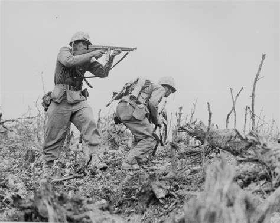Department of External Affairs Infiltrated
Josef Stalin's Soviet Union inflitrated Bert Evatt's Department of External Affairs. ASIO suspected that Bert Evatt was comprimised by the Soviet Union

Soviet Union Recruits Spies
Under the leadership of Communist Party of Australia's Wally Clayton (code name: KLOD) the Soviet Union compromises Australian Government Employees Ric Throssell, Ian Milner and Jim Hill
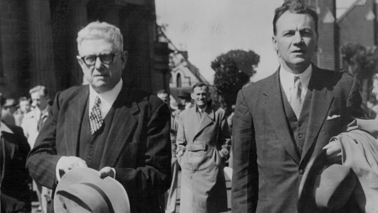Wally Clayton's Spies
The United States counter intelligence program, Venona, decrypts communication showing that Wally Clayton has 10 spies that pass him classified information and gives it to a Soviet Handler.
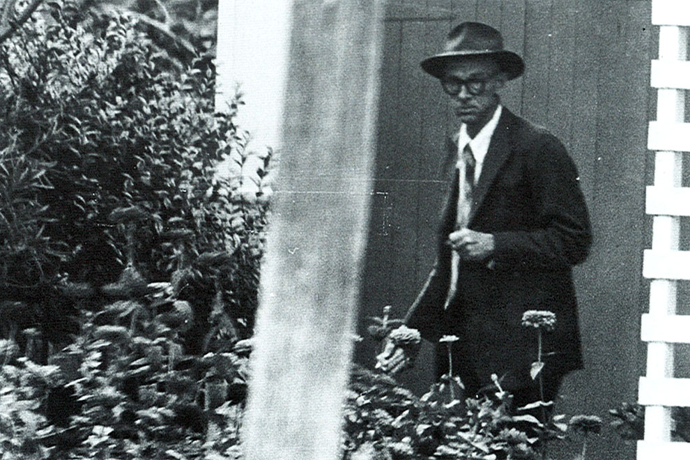1950's
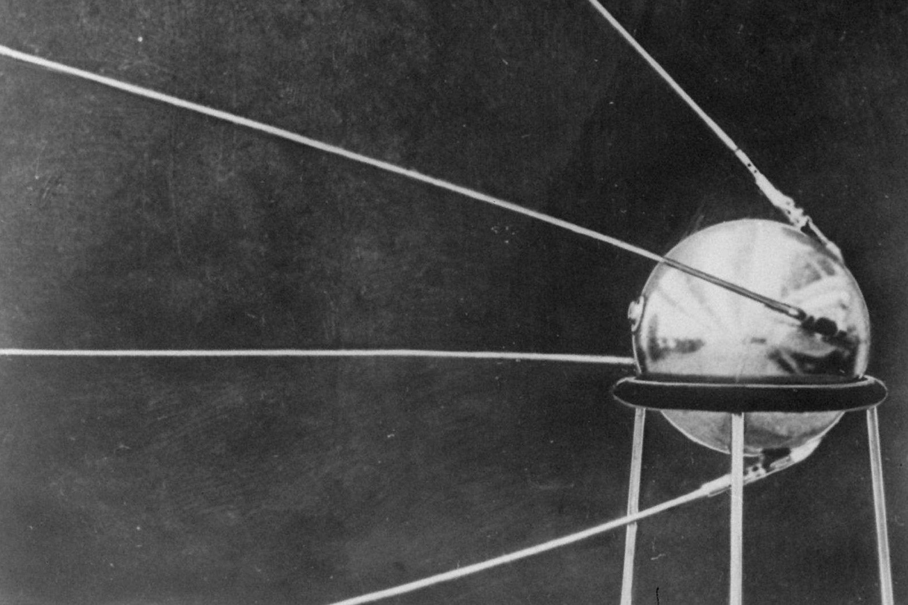KGB officer in Canberra
KGB officer Vladimir Petrov fears assassination from the Soviet Union, so he contacts ASIO and offers information on Soviet Union Espionage in Australia in return for asylum
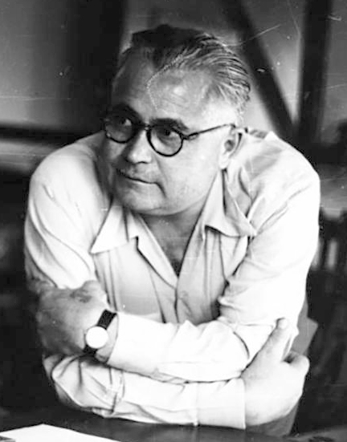Petrov Defects to Australia
Petrov defected on 3 April 1954, bringing documents from the USSR's embassy that showed USSR espionage operations in Canberra. Petrov DID NOT TELL HIS WIFE he was defecting
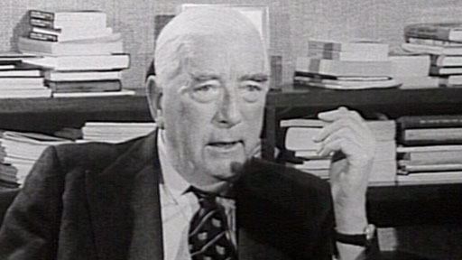Evdokia Petrova kidnapped by the USSR
After kidnapping allegations the USSR sent two MVD agents to retrieve Evdokia Petrov from Australia. She was forced onto a plane by the MVD agents. When the plane was refueling in Darwin, the Australian Prime Minister, Robert Menzies ordered ASIO agents to seize her and offer her assylum. She defected 20 April 1954
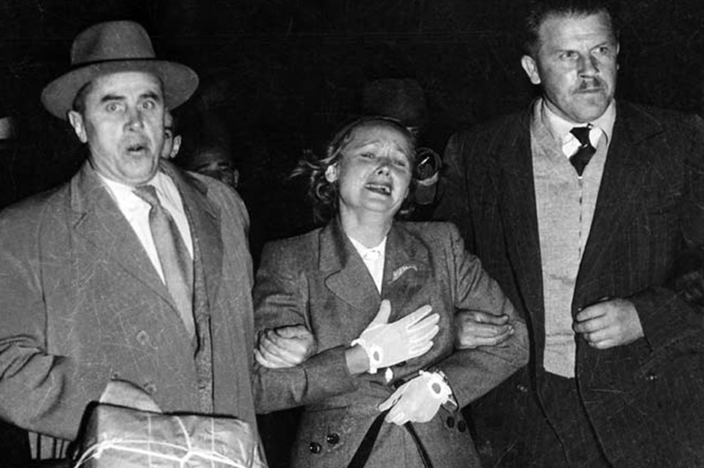The World watches Evdokia Petrova
The images of two KGB agents forcing Evdokia Petrova onto a plane are seen around the world, showing the threat of espionage from the USSR
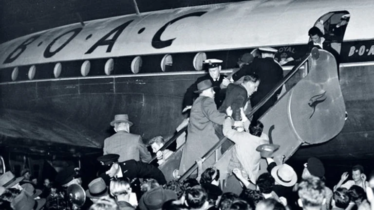Labor Leader Compromised
The Director-General of ASIO tells the British Government that if Bert Evatt wins the 1954 election, they should withhold secrets from Australia
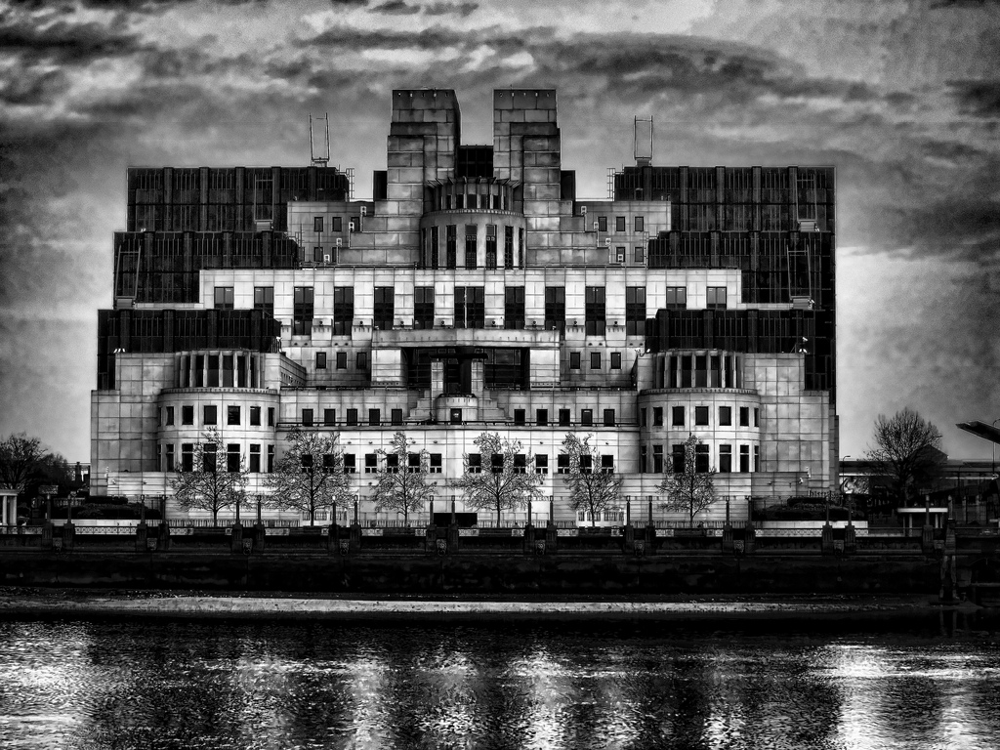Petrov Papers
A royal commission was undertaken to review the credibility of the papers that Vladimir Petrov gave to ASIO upon his defection. The commission found that the Soviet Union Embassy in Canberra was used as a base of operations to spy on Australia since 1943
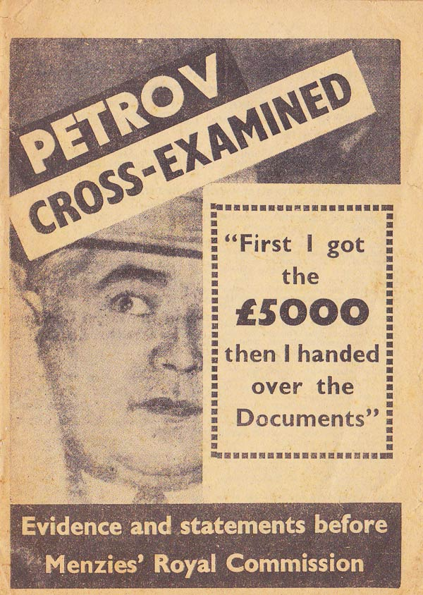A Labor Leader's credibility is destroyed
In 1955, after the Petrov Affair, Bert Evatt declares to the House of Represesntatives that there is no espionage attempts from the Soviet Union because the Soviet Union foreign minister ensured him there was no attempts made. This went against the advise from ASIO to the Australian Government
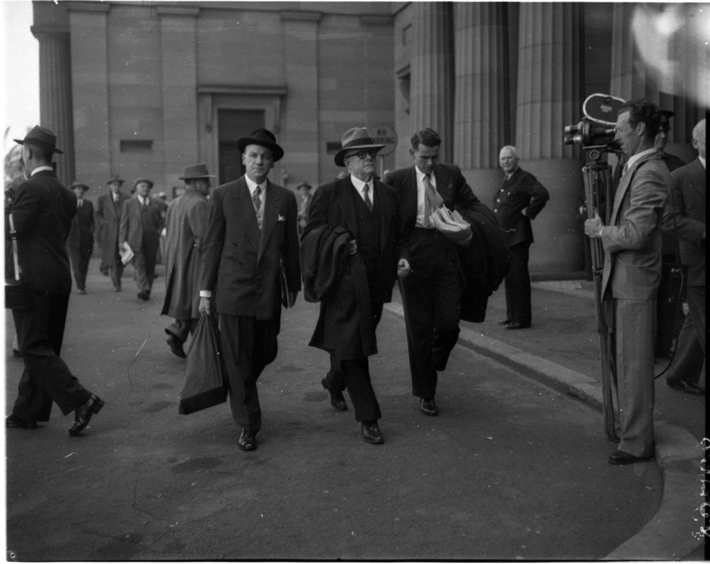